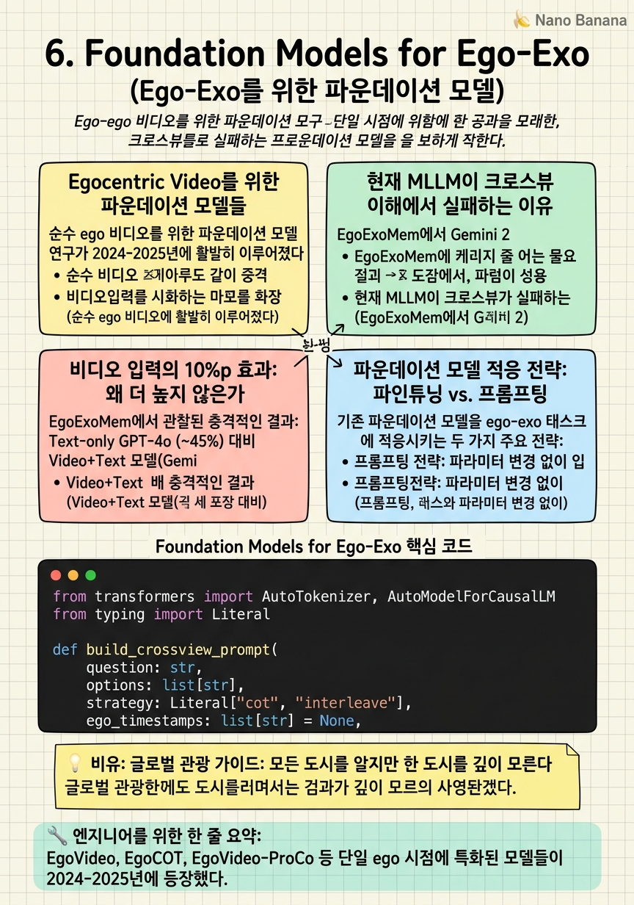

Foundation Models for Ego-Exo

🎯 학습 목표
- 주요 egocentric video foundation model들(EgoVideo, EgoCOT 등)을 알고 그 아키텍처를 설명할 수 있다
- 현재 MLLM이 크로스뷰 이해에서 실패하는 근본 원인을 분석할 수 있다
- 비디오 입력 추가가 성능을 10%p밖에 높이지 못하는 이유를 설명할 수 있다
- 파운데이션 모델을 ego-exo 태스크에 적응시키는 전략을 비교할 수 있다
2024-2026년 동안 대형 비디오-언어 모델(Video LLM, MLLM)의 발전은 놀랍다. 수백만 시간의 비디오-텍스트 쌍으로 사전학습된 모델들이 일반 비디오 이해, 질문응답, 요약 등에서 인상적인 성능을 보인다. 그런데 이 강력한 모델들이 ego-exo 크로스뷰 이해에서는 왜 55%에 그치는가?
이 질문이 2025-2026년 연구의 핵심 주제 중 하나다. 파운데이션 모델의 실패를 이해하면 무엇이 새로운 접근법의 기회인지 보인다. 단순히 더 큰 모델, 더 많은 데이터가 해결책이 아닌 이유 — 그리고 구조적으로 무엇이 다르게 설계되어야 하는지를 이해하는 것이 이 챕터의 목표다.
핵심 내용
Egocentric Video를 위한 파운데이션 모델들
순수 ego 비디오를 위한 파운데이션 모델 연구가 2024-2025년에 활발히 이루어졌다.
EgoVideo (arXiv:2406.18070): Ego-Exo4D와 EPIC-Kitchens 등 egocentric 데이터에 특화된 비디오-텍스트 모델. CLIP과 VideoLLaMA를 ego 데이터로 파인튜닝한 계열이다. EK-100 행동 인식, 멀티스텝 추론 등에서 강점을 보인다.
EgoCOT (arXiv:2503.09143): Ego 비디오에서 Chain-of-Thought 추론을 활성화하는 접근법. 단순히 답을 예측하는 것이 아니라 '왜 그런 답인가?'를 단계적으로 추론하게 훈련한다. 절차적 활동 이해(procedural activity understanding)에서 강점.
EgoVideo-ProCo (arXiv:2603.27184): 절차적 맥락(procedural context)을 ego 비디오에서 학습하는 모델. 요리 레시피, 가구 조립 등 단계별 활동에서 현재 단계를 파악하고 다음 단계를 예측한다.
공통점: 이들 모두 단일 ego 시점에 집중한다. Exo 뷰 없이 ego만으로 최대한 많은 것을 이해하려는 접근이다. 하지만 ego만으로는 얻기 어려운 정보(전신 자세, 공간 구조)가 있고, 이 때문에 ego-exo 상호보완성이 여전히 중요하다.
현재 MLLM이 크로스뷰 이해에서 실패하는 이유
EgoExoMem에서 Gemini 2.5 Flash가 55.3%에 그치는 이유는 무엇인가? 단순히 모델이 작아서가 아니다. 더 구조적인 이유들이 있다.
1. 사전학습 분포 편향: 대부분의 MLLM은 단일 시점 비디오(주로 exo)로 사전학습된다. YouTube, 영화, TV 쇼는 모두 exo 중심이다. 모델이 두 시점의 연결을 학습할 기회가 없었다.
2. 크로스뷰 토큰 연결 부재: 언어 모델이 두 비디오 스트림을 입력받을 때, ego 프레임과 exo 프레임 사이의 명시적 연결(correspondence)이 없다. 모델은 두 독립적인 비디오 시퀀스로 처리하며, 어떤 ego 토큰이 어떤 exo 토큰과 연결되는지 모른다.
3. 공간적 이해 제한: 현재 MLLM의 비디오 인코더(ViT 기반)는 개별 프레임을 독립적으로 처리하거나 제한적인 시간적 풀링만 수행한다. 두 시점 간의 3D 공간적 관계를 이해하는 능력이 부족하다.
4. 메모리 통합 부재: EgoExoMem에서 모델은 비디오 전체를 보고 특정 순간의 크로스뷰 관계를 기억해야 한다. 하지만 현재 아키텍처는 긴 비디오에서 중요 순간을 선택적으로 메모리에 유지하는 능력이 부족하다.
비디오 입력의 10%p 효과: 왜 더 높지 않은가
EgoExoMem에서 관찰된 충격적인 결과: Text-only GPT-4o (~45%) 대비 Video+Text 모델(Gemini 2.5 Flash, 55.3%)의 향상이 10%p에 불과하다. 이 격차가 왜 이렇게 작은가?
프레임 샘플링 문제: 현재 MLLM들은 긴 비디오에서 균일하게 프레임을 샘플링한다. EgoExoMem 질문에 답하기 위해 필요한 결정적 프레임이 샘플링되지 않으면, 비디오 입력이 있더라도 관련 정보를 보지 못한다. E2-Select 방법이 58.2%를 달성한 것이 이를 확인한다 — 스마트한 프레임 선택만으로도 3%p 향상된다.
크로스뷰 attention 부재: 입력받은 ego와 exo 프레임들이 주의 메커니즘을 통해 서로 연결되지 않는다. 두 비디오가 순차적으로 텍스트처럼 처리되며, 어느 ego 토큰이 어느 exo 토큰에 주의를 기울여야 하는지 모른다.
시공간 표현의 한계: 비디오 인코더가 시공간적 구조를 충분히 포착하지 못한다. 8~16프레임으로 서브샘플링된 비디오에서 빠른 손 움직임, 미세 도구 조작 등이 유실된다.
이 분석은 새로운 논문의 기회를 명확히 보여준다: 크로스뷰 연결을 명시적으로 모델링하고, 스마트한 프레임 선택을 통합하며, 공간적 관계를 3D로 이해하는 모델이 현재 MLLM의 한계를 극복할 수 있다.
파운데이션 모델 적응 전략: 파인튜닝 vs. 프롬프팅
기존 파운데이션 모델을 ego-exo 태스크에 적응시키는 두 가지 주요 전략:
프롬프팅 전략: 파라미터 변경 없이 입력 프롬프트만으로 모델을 유도한다.
- Chain-of-thought 프롬프팅: '먼저 ego 뷰에서 보이는 것을 설명하고, 그 다음 exo 뷰에서 보이는 것을 설명하고, 두 뷰의 정보를 통합하라'
- 프레임 인터리빙: Ego와 exo 프레임을 번갈아 제공해 자연스러운 교차 참조 유도
- 기준점 제공: '00:30의 ego 프레임과 00:30의 exo 프레임을 비교하라'
파인튜닝 전략: Ego-Exo4D 같은 paired 데이터로 모델 파라미터를 업데이트한다.
- Full fine-tuning: 모든 파라미터 업데이트 (고비용, 과적합 위험)
- LoRA 파인튜닝: 저차원 어댑터만 학습 (효율적, 포지이 보존)
- Instruction tuning: Ego-exo 크로스뷰 태스크를 지시 형식으로 변환해 instruction 파인튜닝
두 전략의 트레이드오프:
| 전략 | 비용 | 유연성 | 성능 |
|---|---|---|---|
| 프롬프팅 | 낮음 | 높음 | 제한적 |
| LoRA 파인튜닝 | 중간 | 중간 | 좋음 |
| Full 파인튜닝 | 높음 | 낮음 | 최대 (잠재적) |
💡 비유로 이해하기
현재 대형 MLLM은 전 세계 수백만 시간의 비디오를 봤다 — 마치 수백 개 도시를 여행한 경험 많은 글로벌 여행자와 같다. 파리의 에펠탑, 도쿄의 스카이트리, 뉴욕의 자유의 여신상을 다 안다. 하지만 파리의 골목 하나하나, 현지인만 아는 카페, 지역 교통 시스템의 세부는 모른다.
크로스뷰 메모리 추론은 이 '현지 전문 지식'을 요구한다. Ego 카메라가 찍은 주방의 특정 서랍(현지 골목)과 exo 카메라가 찍은 전체 주방 풍경(도시 전경)을 연결하는 것 — 이건 글로벌 여행 경험이 아닌, 그 주방을 직접 학습한 경험이 필요하다.
파운데이션 모델의 한계는 여기서 온다: 너무 광범위하게, 너무 얕게 학습됐다. Ego-exo 크로스뷰 추론에 필요한 '현지 지식'(두 시점의 구체적 연결)은 충분히 학습하지 못했다.
💻 코드 예시
EgoExoMem 스타일 평가에서 기존 MLLM에 크로스뷰 프롬프팅을 적용하는 예시다. Chain-of-Thought와 View-Interleaving 두 가지 전략을 구현한다.
from transformers import AutoTokenizer, AutoModelForCausalLM
from typing import Literal
def build_crossview_prompt(
question: str,
options: list[str],
strategy: Literal["cot", "interleave"],
ego_timestamps: list[str] = None,
exo_timestamps: list[str] = None,
) -> str:
if strategy == "cot":
# Chain-of-thought: 두 뷰를 순서대로 설명한 후 통합
return (
"You are analyzing synchronized egocentric (first-person) and "
"exocentric (third-person) videos of the same activity.\n\n"
f"Question: {question}\n"
f"Options: {', '.join(options)}\n\n"
"Please reason step by step:\n"
"Step 1: What can you observe from the EGOCENTRIC video?"
" (focus on hands and objects)\n"
"Step 2: What can you observe from the EXOCENTRIC video?"
" (focus on full body and environment)\n"
"Step 3: Integrate both views to answer the question.\n"
"Final Answer:"
)
elif strategy == "interleave":
# 시간 축 정렬 명시
ts_hint = ""
if ego_timestamps and exo_timestamps:
ts_hint = (
f"\nEgo frames sampled at: {ego_timestamps}"
f"\nExo frames sampled at: {exo_timestamps}"
"\n(Both cameras are synchronized.)"
)
return (
"You are watching synchronized ego and exo views."
f"{ts_hint}\n\n"
f"Question: {question}\n"
f"Options: {', '.join(options)}\n"
"Use BOTH views together. Answer with the option letter:"
)
# 예시 사용
prompt = build_crossview_prompt(
question="At 00:45, which object did the person pick up in the ego view?",
options=["A. knife", "B. fork", "C. spoon"],
strategy="cot",
)
print(prompt)
CoT 프롬프트는 모델이 두 뷰를 순차적으로 분석하도록 강제해 명시적 크로스뷰 추론을 유도한다. Interleave 전략은 동기화된 타임스탬프를 힌트로 제공해 두 비디오가 같은 시간 축에 있음을 명시한다. 실험에서는 두 전략을 비교해 태스크 유형별로 어느 것이 더 효과적인지 분석하는 것이 중요하다.
🏭 현업에서의 평가
✅ 시니어가 보는 것
- 현재 최고 MLLM의 ego-exo 성능 수준을 수치로 인식 (55.3%)
- 비디오 입력이 10%p밖에 도움되지 않는 근본 원인 분석
- 프롬프팅과 파인튜닝 전략의 트레이드오프를 실험적으로 비교하는 방법
- LoRA 파인튜닝의 기본 원리와 ego-exo 파인튜닝에서의 적절한 rank 선택
⚠️ 레드 플래그
- 'GPT-4V/Gemini를 쓰면 해결된다'는 안이한 가정
- 비디오 입력이 텍스트-only 모델과 성능 차이가 크지 않은 이유를 설명하지 못하는 경우
- 파인튜닝과 프롬프팅을 같은 것으로 취급하는 경우
🎤 예상 인터뷰 질문
- EgoExoMem에서 비디오 입력 추가가 10%p밖에 도움이 되지 않는 이유를 세 가지 관점에서 설명하라.
- Ego-Exo4D 데이터로 Gemini를 파인튜닝한다면 어떤 instruction 형식으로 데이터를 구성해야 하는가?
- 현재 MLLM의 어떤 구조적 한계가 크로스뷰 이해를 막고 있으며, 이를 해결하기 위해 아키텍처를 어떻게 수정해야 하는가?
✨ 핵심 요약
Ego-specific 파운데이션 모델 존재
EgoVideo, EgoCOT, EgoVideo-ProCo 등 단일 ego 시점에 특화된 모델들이 2024-2025년에 등장했다.
MLLM의 크로스뷰 이해 한계
최강 MLLM도 EgoExoMem에서 55.3% — 사전학습 분포 편향과 크로스뷰 연결 부재가 근본 원인이다.
비디오 입력이 10%p만 도움
텍스트-only 대비 비디오 추가의 미미한 이득은 모델이 비디오 크로스뷰 정보를 활용하지 못함을 의미한다.
프레임 선택이 중요
E2-Select가 보여주듯 스마트한 프레임 샘플링만으로도 3%p 향상 가능 — 균일 샘플링이 문제다.
파인튜닝 전략의 트레이드오프
Full 파인튜닝 > LoRA > 프롬프팅 순으로 성능이 높지만 비용과 유연성은 반대다.
구조적 혁신이 필요
더 큰 모델이 아니라, 크로스뷰 연결을 명시적으로 모델링하는 새로운 아키텍처가 필요하다.